Major Arcana
The Fool
-
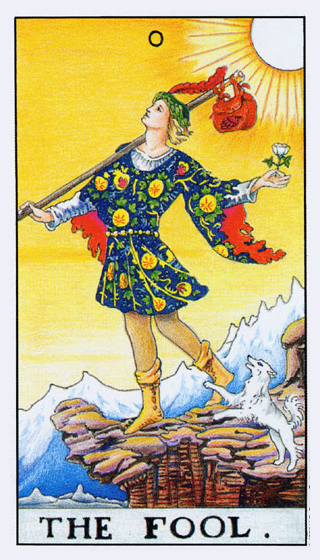
The Fool
Card Interpretation: Represents new beginnings, spontaneity, and taking risks.
Astrological Interpretation: Guided by Uranus, symbolizing sudden change and the unconventional.
Combined Interpretation: The Fool, under Uranus, urges you to embrace new beginnings with spontaneity and take risks for unconventional outcomes.
Hebrew Letter: Aleph (א) - Symbol of beginnings and the infinite.
The Magician
-
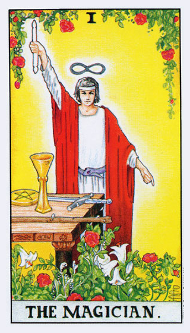
The Magician
Card Interpretation: Symbolizes manifestation, resourcefulness, and power.
Astrological Interpretation: Associated with Mercury, representing communication and intellect.
Combined Interpretation: The Magician, under Mercury, urges you to use your skills and intellect to manifest your desires.
Hebrew Letter: Beth (ב) - Symbol of the house and the temple.
The High Priestess
-
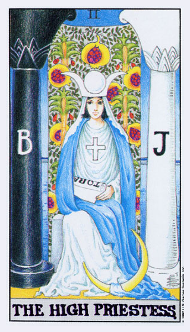
The High Priestess
Card Interpretation: Represents intuition, wisdom, and mystery.
Astrological Interpretation: Guided by the Moon, symbolizing intuition and subconscious.
Combined Interpretation: The High Priestess, under the Moon, encourages you to trust your intuition and explore the mysteries within.
Hebrew Letter: Gimel (ג) - Symbol of the camel, representing the ability to travel within.
The Empress
-
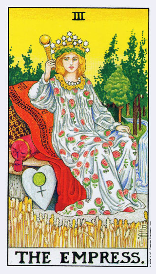
The Empress
Card Interpretation: Symbolizes femininity, beauty, nature, and abundance.
Astrological Interpretation: Associated with Venus, representing love, beauty, and fertility.
Combined Interpretation: The Empress, under Venus, encourages you to embrace your femininity and the beauty of nature and abundance.
Hebrew Letter: Daleth (ד) - Symbol of the door, representing a passage or transition.
The Emperor
-
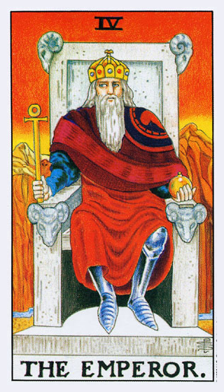
The Emperor
Card Interpretation: Represents authority, structure, control, and fatherhood.
Astrological Interpretation: Guided by Aries, symbolizing leadership and assertiveness.
Combined Interpretation: The Emperor, under Aries, urges you to take control and lead with authority and structure.
Hebrew Letter: Heh (ה) - Symbol of window, representing a view or vision.
The Hierophant
-
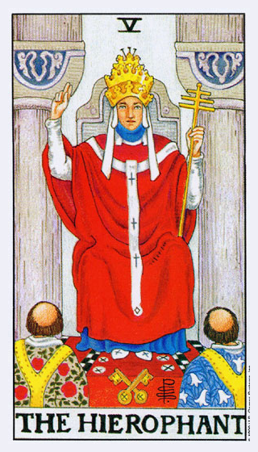
The Hierophant
Card Interpretation: Symbolizes tradition, conformity, morality, and ethics.
Astrological Interpretation: Associated with Taurus, representing stability and reliability.
Combined Interpretation: The Hierophant, under Taurus, encourages you to follow tradition and seek stability in your actions and beliefs.
Hebrew Letter: Vav (ו) - Symbol of nail, representing connection or joining.
The Lovers
-
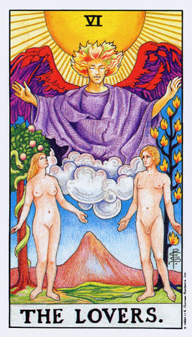
The Lovers
Card Interpretation: Represents love, harmony, relationships, and choices.
Astrological Interpretation: Guided by Gemini, symbolizing communication and duality.
Combined Interpretation: The Lovers, under Gemini, urges you to seek harmony in relationships and make choices that reflect your true desires.
Hebrew Letter: Zayin (ז) - Symbol of sword, representing a tool for decision and discernment.
The Chariot
-
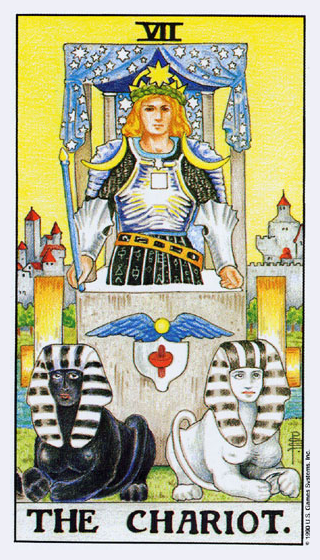
The Chariot
Card Interpretation: Symbolizes determination, willpower, and control.
Astrological Interpretation: Associated with Cancer, representing emotions and the home.
Combined Interpretation: The Chariot, under Cancer, urges you to harness your emotions and willpower to achieve your goals.
Hebrew Letter: Cheth (ח) - Symbol of fence, representing protection and separation.
Strength
-
 Strength
StrengthCard Interpretation: Represents courage, patience, and inner strength.
Astrological Interpretation: Guided by Leo, symbolizing pride and determination.
Combined Interpretation: Strength, under Leo, urges you to find courage within and face challenges with patience and determination.
Hebrew Letter: Teth (ט) - Symbol of snake, representing power and transformation.
The Hermit
-
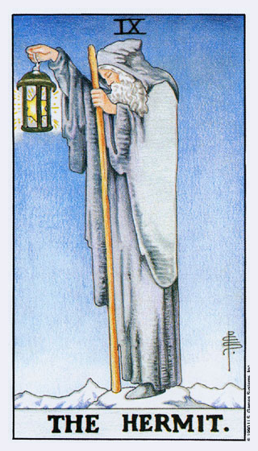
The Hermit
Card Interpretation: Symbolizes introspection, solitude, and inner guidance.
Astrological Interpretation: Associated with Virgo, representing analysis and introspection.
Combined Interpretation: The Hermit, under Virgo, encourages you to seek wisdom and guidance within through introspection.
Hebrew Letter: Yod (י) - Symbol of hand, representing action and purpose.
Wheel of Fortune
-
 Wheel of Fortune
Wheel of FortuneCard Interpretation: Represents change, cycles, and fate.
Astrological Interpretation: Guided by Jupiter, symbolizing expansion and growth.
Combined Interpretation: Wheel of Fortune, under Jupiter, urges you to embrace change and understand the cycles of life.
Hebrew Letter: Kaph (כ) - Symbol of palm, representing grasp and power.
Justice
-
 Justice
JusticeCard Interpretation: Symbolizes fairness, truth, and law.
Astrological Interpretation: Associated with Libra, representing balance and harmony.
Combined Interpretation: Justice, under Libra, urges you to seek truth and fairness in all actions.
Hebrew Letter: Lamed (ל) - Symbol of ox-goad, representing learning and teaching.
The Hanged Man
-
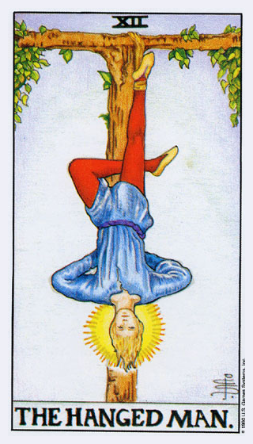
The Hanged Man
Card Interpretation: Represents suspension, restriction, and letting go.
Astrological Interpretation: Guided by Neptune, symbolizing spirituality and sacrifice.
Combined Interpretation: The Hanged Man, under Neptune, urges you to embrace new perspectives and let go of old patterns.
Hebrew Letter: Mem (מ) - Symbol of water, representing fluidity and change.
Death
-
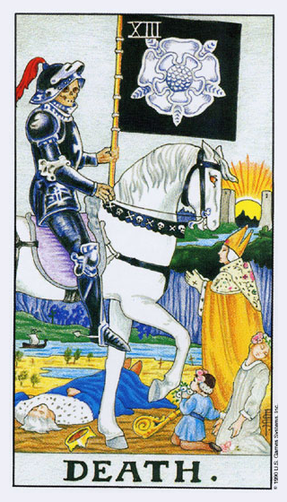
Death
Card Interpretation: Symbolizes transformation, endings, and new beginnings.
Astrological Interpretation: Associated with Scorpio, representing transformation and rebirth.
Combined Interpretation: Death, under Scorpio, urges you to embrace transformation and the cycle of life and death.
Hebrew Letter: Nun (נ) - Symbol of fish, representing life and activity.
Temperance
-
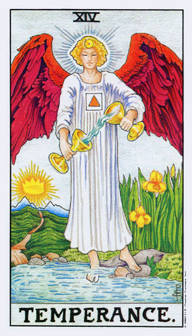
Temperance
Card Interpretation: Represents balance, moderation, and patience.
Astrological Interpretation: Guided by Sagittarius, symbolizing adventure and philosophy.
Combined Interpretation: Temperance, under Sagittarius, urges you to find balance and harmony in all aspects of life.
Hebrew Letter: Samekh (ס) - Symbol of prop, representing support and guidance.
The Devil
-
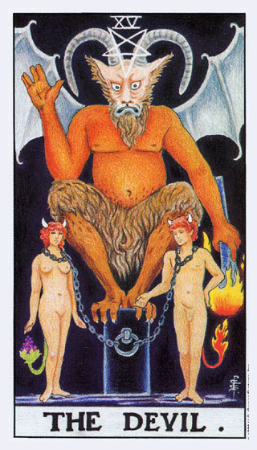
The Devil
Card Interpretation: Symbolizes temptation, addiction, and materialism.
Astrological Interpretation: Associated with Capricorn, representing ambition and control.
Combined Interpretation: The Devil, under Capricorn, urges you to recognize and overcome temptations and materialistic desires.
Hebrew Letter: Ayin (ע) - Symbol of eye, representing perception and awareness.
The Tower
-
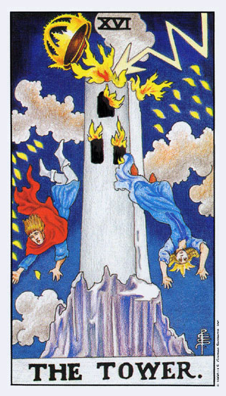
The Tower
Card Interpretation: Represents upheaval, sudden change, and revelation.
Astrological Interpretation: Guided by Mars, symbolizing conflict and energy.
Combined Interpretation: The Tower, under Mars, urges you to embrace change and allow old structures to fall for new growth.
Hebrew Letter: Pe (פ) - Symbol of mouth, representing expression and communication.
The Star
-
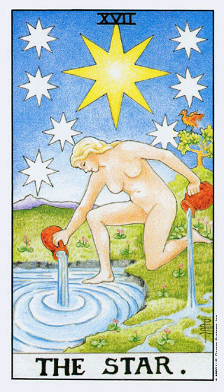
The Star
Card Interpretation: Symbolizes hope, inspiration, and serenity.
Astrological Interpretation: Associated with Aquarius, representing innovation and progress.
Combined Interpretation: The Star, under Aquarius, urges you to find inspiration and hope in the midst of challenges.
Hebrew Letter: Tzaddi (צ) - Symbol of fishhook, representing capture and seeking.
The Moon
-
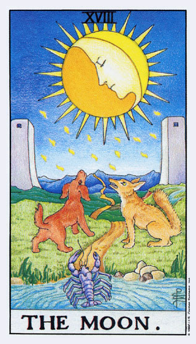
The Moon
Card Interpretation: Represents illusion, intuition, and the unconscious.
Astrological Interpretation: Guided by Pisces, symbolizing dreams and intuition.
Combined Interpretation: The Moon, under Pisces, encourages you to explore your unconscious and trust your intuition.
Hebrew Letter: Qoph (ק) - Symbol of back of head, representing subconscious and mystery.
The Sun
-
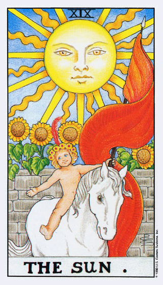
The Sun
Card Interpretation: Symbolizes positivity, success, and vitality.
Astrological Interpretation: Associated with the Sun, representing life force and energy.
Combined Interpretation: The Sun, urges you to embrace positivity and vitality in your life.
Hebrew Letter: Resh (ר) - Symbol of head, representing leadership and focus.
Judgement
-
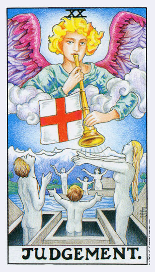
Judgement
Card Interpretation: Represents rebirth, evaluation, and awakening.
Astrological Interpretation: Guided by Pluto, symbolizing transformation and renewal.
Combined Interpretation: Judgement, under Pluto, urges you to evaluate your life and embrace transformation and renewal.
Hebrew Letter: Shin (ש) - Symbol of tooth, representing consumption and transformation.
The World
-
 The World
The WorldCard Interpretation: Symbolizes completion, integration, and accomplishment.
Astrological Interpretation: Associated with Saturn, representing discipline and structure.
Combined Interpretation: The World, under Saturn, urges you to embrace completion and integration in your journey.
Hebrew Letter: Tav (ת) - Symbol of cross, representing truth and perfection.
Wands
Ace of Wands
-
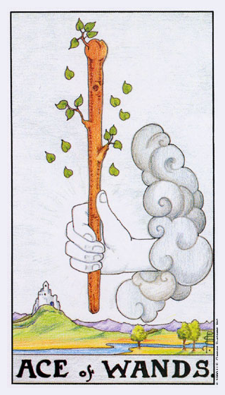
Ace of Wands
Card Interpretation: Symbolizes inspiration, power, and new beginnings.
Astrological Interpretation: Associated with the element of Fire, representing energy, passion, and creativity.
Combined Interpretation: The Ace of Wands, aligned with Fire, ignites inspiration and creativity, encouraging you to embrace new beginnings with power and passion.
Two of Wands
-
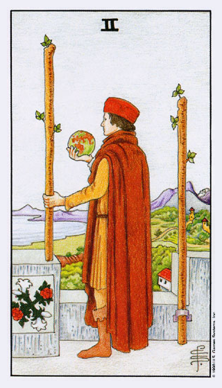
Two of Wands
Card Interpretation: Symbolizes planning, decision-making, and progress.
Astrological Interpretation: Associated with Mars in Aries, representing assertiveness and initiative.
Combined Interpretation: The Two of Wands, aligned with Mars in Aries, urges you to take initiative and make decisions to move forward.
Three of Wands
-
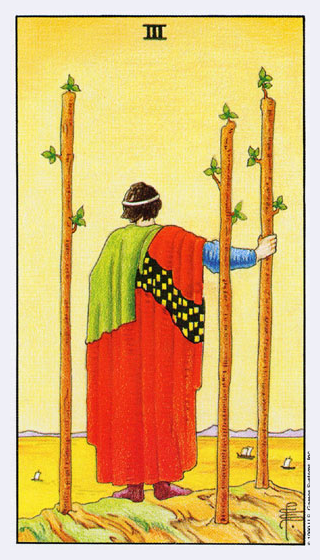
Three of Wands
Card Interpretation: Symbolizes expansion, foresight, and exploration.
Astrological Interpretation: Associated with the Sun in Aries, representing vision and leadership.
Combined Interpretation: The Three of Wands, aligned with the Sun in Aries, urges you to explore new opportunities and expand your horizons.
Four of Wands
-
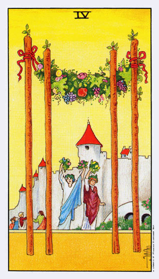
Four of Wands
Card Interpretation: Symbolizes celebration, harmony, and stability.
Astrological Interpretation: Associated with Venus in Aries, representing love and creativity.
Combined Interpretation: The Four of Wands, aligned with Venus in Aries, urges you to celebrate achievements and enjoy harmony in your relationships.
Five of Wands
-
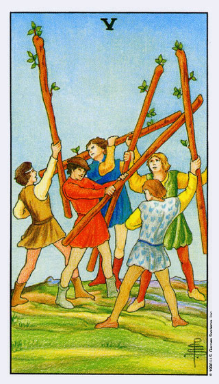
Five of Wands
Card Interpretation: Symbolizes conflict, competition, and struggle.
Astrological Interpretation: Associated with Saturn in Leo, representing challenges and restrictions.
Combined Interpretation: The Five of Wands, aligned with Saturn in Leo, urges you to face challenges and competition with determination.
Six of Wands
-
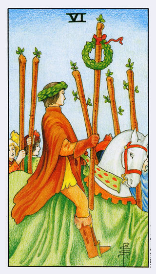
Six of Wands
Card Interpretation: Symbolizes victory, success, and recognition.
Astrological Interpretation: Associated with Jupiter in Leo, representing confidence and growth.
Combined Interpretation: The Six of Wands, aligned with Jupiter in Leo, urges you to embrace success and recognition with confidence.
Seven of Wands
-
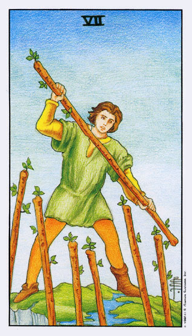
Seven of Wands
Card Interpretation: Symbolizes perseverance, defense, and resilience.
Astrological Interpretation: Associated with Mars in Leo, representing courage and determination.
Combined Interpretation: The Seven of Wands, aligned with Mars in Leo, urges you to stand your ground and persevere through challenges.
Eight of Wands
-
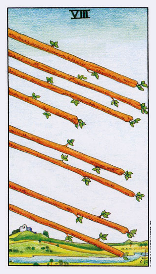
Eight of Wands
Card Interpretation: Symbolizes rapid movement, progress, and communication.
Astrological Interpretation: Associated with Mercury in Sagittarius, representing swiftness and expansion.
Combined Interpretation: The Eight of Wands, aligned with Mercury in Sagittarius, urges you to embrace rapid progress and communicate effectively.
Nine of Wands
-
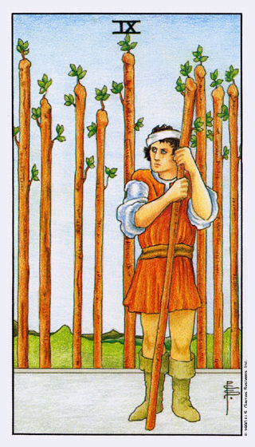
Nine of Wands
Card Interpretation: Symbolizes resilience, courage, and persistence.
Astrological Interpretation: Associated with the Moon in Sagittarius, representing intuition and adaptability.
Combined Interpretation: The Nine of Wands, aligned with the Moon in Sagittarius, urges you to stay resilient and adaptable in the face of adversity.
Ten of Wands
-
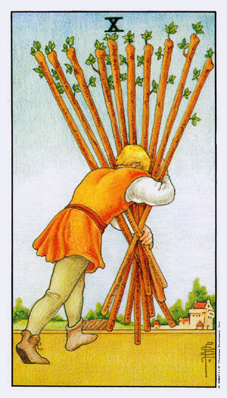
Ten of Wands
Card Interpretation: Symbolizes burden, responsibility, and hard work.
Astrological Interpretation: Associated with Saturn in Sagittarius, representing discipline and endurance.
Combined Interpretation: The Ten of Wands, aligned with Saturn in Sagittarius, urges you to shoulder your responsibilities with discipline and endurance.
Page of Wands
-
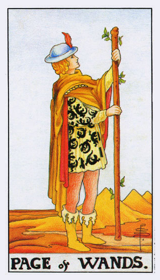
Page of Wands
Card Interpretation: Symbolizes enthusiasm, exploration, and potential.
Astrological Interpretation: Associated with Earth of Fire, representing grounded enthusiasm.
Combined Interpretation: The Page of Wands urges you to explore new opportunities with enthusiasm and grounded energy.
Knight of Wands
-
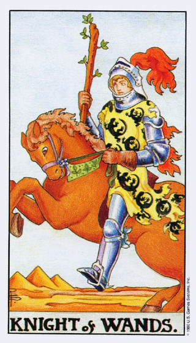
Knight of Wands
Card Interpretation: Symbolizes action, adventure, and confidence.
Astrological Interpretation: Associated with Air of Fire, representing dynamic energy.
Combined Interpretation: The Knight of Wands urges you to take action and embrace adventure with confidence and dynamic energy.
Queen of Wands
-
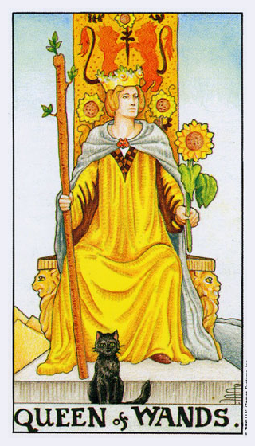
Queen of Wands
Card Interpretation: Symbolizes warmth, vibrancy, and determination.
Astrological Interpretation: Associated with Water of Fire, representing emotional passion.
Combined Interpretation: The Queen of Wands urges you to embrace your passion and determination with warmth and vibrancy.
King of Wands
-
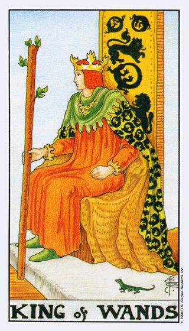
King of Wands
Card Interpretation: Symbolizes leadership, vision, and honor.
Astrological Interpretation: Associated with Fire of Fire, representing pure dynamic energy.
Combined Interpretation: The King of Wands urges you to lead with vision and honor, embracing your dynamic energy.
Cups
Ace of Cups
-
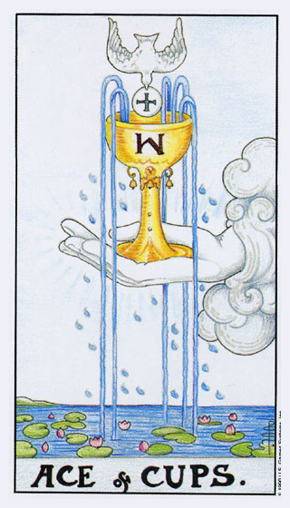
Ace of Cups
Card Interpretation: Symbolizes emotional fulfillment, love, and new relationships.
Astrological Interpretation: Associated with the element of Water, representing emotions, intuition, and the subconscious.
Combined Interpretation: The Ace of Cups, aligned with Water, brings emotional fulfillment and new relationships, encouraging you to embrace love and intuition.
Two of Cups
-
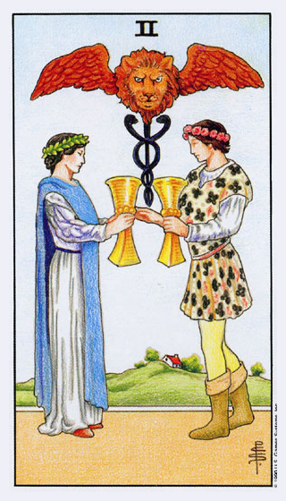
Two of Cups
Card Interpretation: Symbolizes partnership, unity, and mutual respect.
Astrological Interpretation: Associated with Venus in Cancer, representing emotional bonds and love.
Combined Interpretation: The Two of Cups, aligned with Venus in Cancer, urges you to seek partnerships built on mutual respect and emotional bonds.
Three of Cups
-
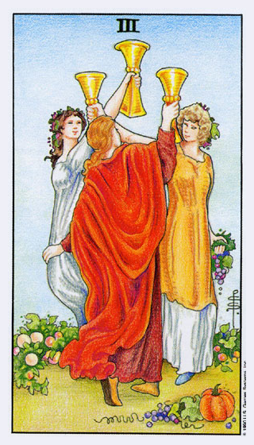
Three of Cups
Card Interpretation: Symbolizes celebration, friendship, and community.
Astrological Interpretation: Associated with Mercury in Cancer, representing communication and emotional expression.
Combined Interpretation: The Three of Cups, aligned with Mercury in Cancer, urges you to celebrate friendships and community, expressing your emotions freely.
Four of Cups
-
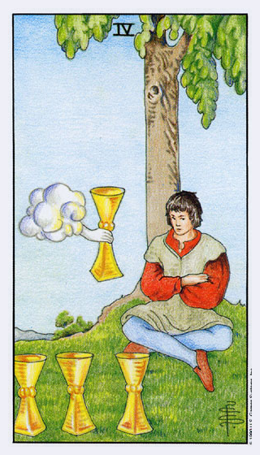
Four of Cups
Card Interpretation: Symbolizes contemplation, reevaluation, and introspection.
Astrological Interpretation: Associated with the Moon in Cancer, representing inner reflection and emotional awareness.
Combined Interpretation: The Four of Cups, aligned with the Moon in Cancer, urges you to contemplate and reevaluate your emotions and current situation.
Five of Cups
-
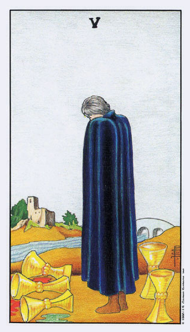
Five of Cups
Card Interpretation: Symbolizes loss, regret, and emotional challenge.
Astrological Interpretation: Associated with Mars in Scorpio, representing emotional intensity and transformation.
Combined Interpretation: The Five of Cups, aligned with Mars in Scorpio, urges you to confront and transform emotional challenges and regrets.
Six of Cups
-
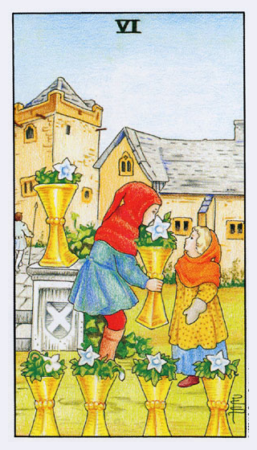
Six of Cups
Card Interpretation: Symbolizes nostalgia, memories, and childhood.
Astrological Interpretation: Associated with the Sun in Scorpio, representing deep emotional connections and joy.
Combined Interpretation: The Six of Cups, aligned with the Sun in Scorpio, urges you to reconnect with your past and cherish memories and emotional connections.
Seven of Cups
-
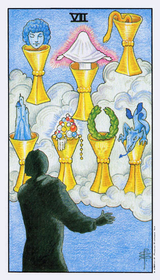
Seven of Cups
Card Interpretation: Symbolizes choices, dreams, and illusion.
Astrological Interpretation: Associated with Venus in Scorpio, representing emotional complexity and desires.
Combined Interpretation: The Seven of Cups, aligned with Venus in Scorpio, urges you to evaluate your choices and distinguish between reality and illusion.
Eight of Cups
-
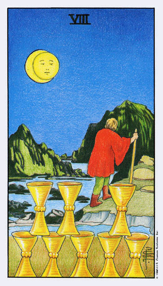
Eight of Cups
Card Interpretation: Symbolizes departure, journey, and change.
Astrological Interpretation: Associated with Saturn in Pisces, representing emotional discipline and growth.
Combined Interpretation: The Eight of Cups, aligned with Saturn in Pisces, urges you to embark on a journey of emotional growth and change, leaving behind what no longer serves you.
Nine of Cups
-
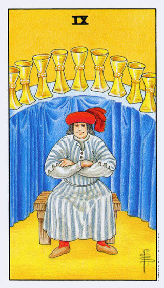
Nine of Cups
Card Interpretation: Symbolizes fulfillment, satisfaction, and contentment.
Astrological Interpretation: Associated with Jupiter in Pisces, representing abundance and spiritual joy.
Combined Interpretation: The Nine of Cups, aligned with Jupiter in Pisces, urges you to embrace fulfillment and contentment in your emotional and spiritual life.
Ten of Cups
-
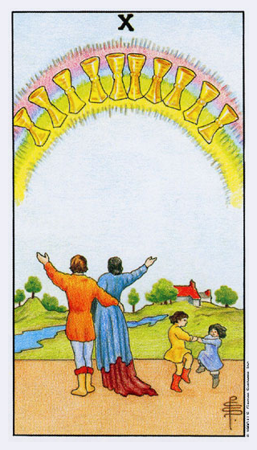
Ten of Cups
Card Interpretation: Symbolizes happiness, harmony, and emotional fulfillment.
Astrological Interpretation: Associated with Mars in Pisces, representing dynamic emotional energy and joy.
Combined Interpretation: The Ten of Cups, aligned with Mars in Pisces, urges you to embrace happiness and harmony in your emotional and family life.
Page of Cups
-
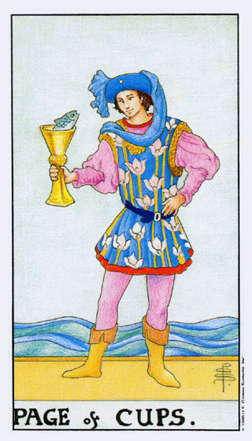
Page of Cups
Card Interpretation: Symbolizes creativity, intuition, and emotional openness.
Astrological Interpretation: Associated with Earth of Water, representing grounded emotional energy.
Combined Interpretation: The Page of Cups urges you to embrace creativity and intuition with emotional openness and grounded energy.
Knight of Cups
-
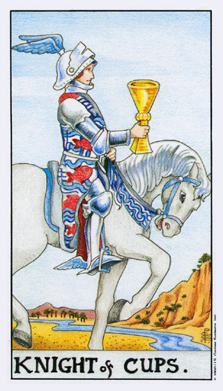
Knight of Cups
Card Interpretation: Symbolizes romance, charm, and idealism.
Astrological Interpretation: Associated with Air of Water, representing dynamic emotional expression.
Combined Interpretation: The Knight of Cups urges you to embrace romance and idealism with charm and dynamic emotional expression.
Queen of Cups
-
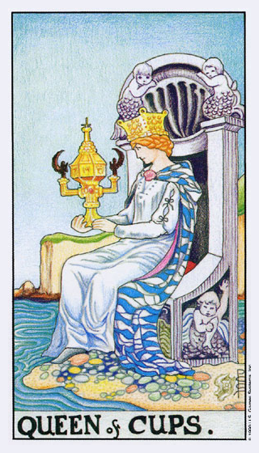
Queen of Cups
Card Interpretation: Symbolizes compassion, intuition, and emotional depth.
Astrological Interpretation: Associated with Water of Water, representing pure emotional energy.
Combined Interpretation: The Queen of Cups urges you to embrace your compassion and intuition with emotional depth and purity.
King of Cups
-
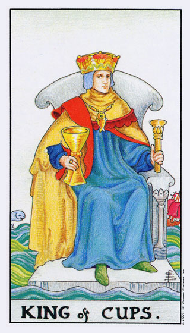
King of Cups
Card Interpretation: Symbolizes emotional balance, control, and generosity.
Astrological Interpretation: Associated with Fire of Water, representing dynamic emotional leadership.
Combined Interpretation: The King of Cups urges you to lead with emotional balance and generosity, embracing dynamic emotional energy.
Swords
Ace of Swords
-
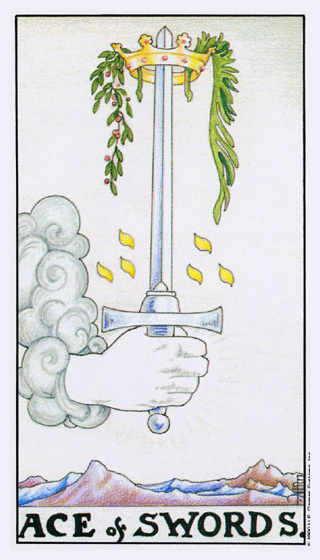
Ace of Swords
Card Interpretation: Symbolizes clarity, truth, and new ideas.
Astrological Interpretation: Associated with the element of Air, representing intellect, communication, and insight.
Combined Interpretation: The Ace of Swords, aligned with Air, brings clarity and new ideas, urging you to embrace truth and intellectual insight.
Two of Swords
-
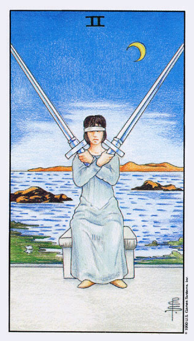
Two of Swords
Card Interpretation: Symbolizes decision-making, balance, and indecision.
Astrological Interpretation: Associated with the Moon in Libra, representing emotional balance and harmony.
Combined Interpretation: The Two of Swords, aligned with the Moon in Libra, urges you to seek emotional balance and make decisions with harmony and clarity.
Three of Swords
-
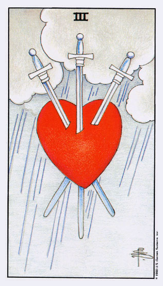
Three of Swords
Card Interpretation: Symbolizes heartbreak, sorrow, and emotional pain.
Astrological Interpretation: Associated with Saturn in Libra, representing emotional challenges and restrictions.
Combined Interpretation: The Three of Swords, aligned with Saturn in Libra, urges you to confront and heal from emotional pain and heartbreak.
Four of Swords
-
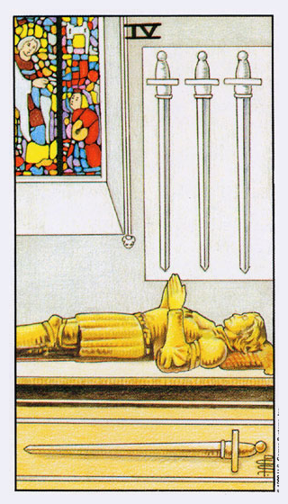
Four of Swords
Card Interpretation: Symbolizes rest, recuperation, and contemplation.
Astrological Interpretation: Associated with Jupiter in Libra, representing growth and healing.
Combined Interpretation: The Four of Swords, aligned with Jupiter in Libra, urges you to take time for rest and contemplation to promote healing and growth.
Five of Swords
-
Five of Swords
Card Interpretation: Symbolizes conflict, defeat, and betrayal.
Astrological Interpretation: Associated with Venus in Aquarius, representing emotional detachment and challenges.
Combined Interpretation: The Five of Swords, aligned with Venus in Aquarius, urges you to confront conflicts and emotional challenges with detachment and clarity.
Six of Swords
-
Six of Swords
Card Interpretation: Symbolizes transition, recovery, and moving on.
Astrological Interpretation: Associated with Mercury in Aquarius, representing intellectual growth and change.
Combined Interpretation: The Six of Swords, aligned with Mercury in Aquarius, urges you to embrace transition and intellectual growth as you move on from past challenges.
Seven of Swords
-
Seven of Swords
Card Interpretation: Symbolizes strategy, deception, and cunning.
Astrological Interpretation: Associated with the Moon in Aquarius, representing intuition and strategic thinking.
Combined Interpretation: The Seven of Swords, aligned with the Moon in Aquarius, urges you to use your intuition and strategic thinking to navigate challenges and avoid deception.
Eight of Swords
-
Eight of Swords
Card Interpretation: Symbolizes restriction, limitation, and fear.
Astrological Interpretation: Associated with Jupiter in Gemini, representing mental challenges and growth.
Combined Interpretation: The Eight of Swords, aligned with Jupiter in Gemini, urges you to confront your fears and limitations to achieve mental growth and freedom.
Nine of Swords
-
Nine of Swords
Card Interpretation: Symbolizes anxiety, worry, and nightmares.
Astrological Interpretation: Associated with Mars in Gemini, representing mental conflict and tension.
Combined Interpretation: The Nine of Swords, aligned with Mars in Gemini, urges you to confront your anxieties and mental conflicts to find peace and resolution.
Ten of Swords
-
Ten of Swords
Card Interpretation: Symbolizes betrayal, defeat, and painful endings.
Astrological Interpretation: Associated with the Sun in Gemini, representing clarity and finality.
Combined Interpretation: The Ten of Swords, aligned with the Sun in Gemini, urges you to confront and accept painful endings to achieve clarity and closure.
Page of Swords
-
Page of Swords
Card Interpretation: Symbolizes curiosity, communication, and new ideas.
Astrological Interpretation: Associated with Earth of Air, representing grounded intellect.
Combined Interpretation: The Page of Swords urges you to embrace curiosity and new ideas with grounded intellect and clear communication.
Knight of Swords
-
Knight of Swords
Card Interpretation: Symbolizes action, intellect, and assertiveness.
Astrological Interpretation: Associated with Air of Air, representing dynamic mental energy.
Combined Interpretation: The Knight of Swords urges you to take action and assert your ideas with dynamic mental energy and clarity.
Queen of Swords
-
Queen of Swords
Card Interpretation: Symbolizes wisdom, clarity, and independence.
Astrological Interpretation: Associated with Water of Air, representing emotional intelligence.
Combined Interpretation: The Queen of Swords urges you to embrace wisdom and clarity with emotional intelligence and independence.
King of Swords
-
King of Swords
Card Interpretation: Symbolizes authority, intellect, and truth.
Astrological Interpretation: Associated with Fire of Air, representing dynamic intellectual leadership.
Combined Interpretation: The King of Swords urges you to lead with authority and intellect, embracing truth and dynamic mental energy.
Pentacles
Ace of Pentacles
-
Ace of Pentacles
Card Interpretation: Symbolizes new opportunities, prosperity, and material beginnings.
Astrological Interpretation: Associated with the element of Earth, representing stability, practicality, and growth.
Combined Interpretation: The Ace of Pentacles, aligned with Earth, brings new opportunities and prosperity, urging you to embrace material beginnings with stability and practicality.
Two of Pentacles
-
Two of Pentacles
Card Interpretation: Symbolizes balance, adaptability, and juggling priorities.
Astrological Interpretation: Associated with Jupiter in Capricorn, representing growth and practical expansion.
Combined Interpretation: The Two of Pentacles, aligned with Jupiter in Capricorn, urges you to maintain balance and adaptability while juggling priorities and embracing practical growth.
Three of Pentacles
-
 Three of Pentacles
Three of PentaclesCard Interpretation: Symbolizes teamwork, collaboration, and skill development.
Astrological Interpretation: Associated with Mars in Capricorn, representing practical action and discipline.
Combined Interpretation: The Three of Pentacles, aligned with Mars in Capricorn, urges you to work collaboratively and develop your skills with practical action and discipline.
Four of Pentacles
-
Four of Pentacles
Card Interpretation: Symbolizes stability, security, and material control.
Astrological Interpretation: Associated with the Sun in Capricorn, representing practical success and stability.
Combined Interpretation: The Four of Pentacles, aligned with the Sun in Capricorn, urges you to seek stability and security in your material pursuits while maintaining practical control and success.
Five of Pentacles
-
Five of Pentacles
Card Interpretation: Symbolizes hardship, struggle, and financial challenges.
Astrological Interpretation: Associated with Mercury in Taurus, representing practical communication and challenges.
Combined Interpretation: The Five of Pentacles, aligned with Mercury in Taurus, urges you to confront and communicate your financial challenges and struggles with practicality and resilience.
Six of Pentacles
-
Six of Pentacles
Card Interpretation: Symbolizes generosity, sharing, and balance in giving and receiving.
Astrological Interpretation: Associated with the Moon in Taurus, representing emotional generosity and stability.
Combined Interpretation: The Six of Pentacles, aligned with the Moon in Taurus, urges you to embrace generosity and balance in giving and receiving, fostering emotional and material stability.
Seven of Pentacles
-
Seven of Pentacles
Card Interpretation: Symbolizes patience, evaluation, and long-term planning.
Astrological Interpretation: Associated with Saturn in Taurus, representing discipline and patience in material pursuits.
Combined Interpretation: The Seven of Pentacles, aligned with Saturn in Taurus, urges you to practice patience and discipline in evaluating your progress and planning for long-term success.
Eight of Pentacles
-
Eight of Pentacles
Card Interpretation: Symbolizes diligence, craftsmanship, and hard work.
Astrological Interpretation: Associated with the Sun in Virgo, representing practical perfection and dedication.
Combined Interpretation: The Eight of Pentacles, aligned with the Sun in Virgo, urges you to embrace diligence and hard work in your pursuits, striving for practical perfection and dedication.
Nine of Pentacles
-
Nine of Pentacles
Card Interpretation: Symbolizes self-sufficiency, luxury, and financial independence.
Astrological Interpretation: Associated with Venus in Virgo, representing practical beauty and enjoyment.
Combined Interpretation: The Nine of Pentacles, aligned with Venus in Virgo, urges you to embrace self-sufficiency and enjoy the practical beauty and luxury of your achievements.
Ten of Pentacles
-
Ten of Pentacles
Card Interpretation: Symbolizes legacy, inheritance, and family wealth.
Astrological Interpretation: Associated with Mercury in Virgo, representing practical communication and legacy.
Combined Interpretation: The Ten of Pentacles, aligned with Mercury in Virgo, urges you to focus on your legacy and communicate your practical values and wealth to future generations.
Page of Pentacles
-
Page of Pentacles
Card Interpretation: Symbolizes ambition, learning, and new opportunities.
Astrological Interpretation: Associated with Earth of Earth, representing practical ambition and potential.
Combined Interpretation: The Page of Pentacles urges you to embrace new opportunities and practical learning with ambition and potential.
Knight of Pentacles
-
Knight of Pentacles
Card Interpretation: Symbolizes reliability, patience, and hard work.
Astrological Interpretation: Associated with Air of Earth, representing dynamic practical energy.
Combined Interpretation: The Knight of Pentacles urges you to embrace reliability and patience in your hard work, combining dynamic practical energy with dedication.
Queen of Pentacles
-
Queen of Pentacles
Card Interpretation: Symbolizes nurturing, practicality, and abundance.
Astrological Interpretation: Associated with Water of Earth, representing emotional practical energy.
Combined Interpretation: The Queen of Pentacles urges you to embrace nurturing and practicality in your pursuit of abundance, combining emotional and practical energy.
King of Pentacles
-
King of Pentacles
Card Interpretation: Symbolizes wealth, stability, and practicality.
Astrological Interpretation: Associated with Fire of Earth, representing dynamic practical leadership.
Combined Interpretation: The King of Pentacles urges you to lead with wealth and stability, embracing dynamic practical energy in your pursuits.